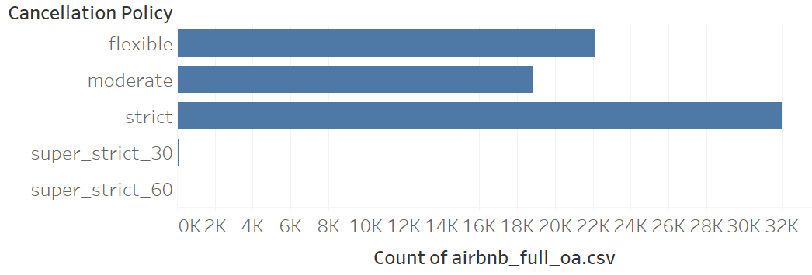
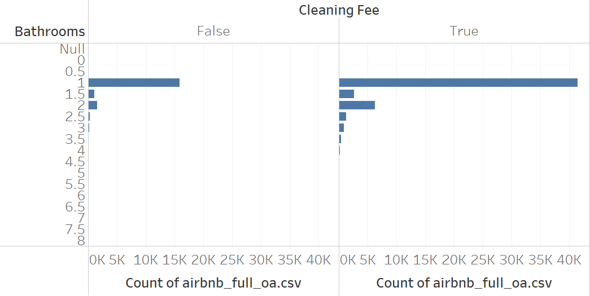

df <- read.csv(file.path("..", "shared", "data", "airbnb_chicago.csv"))Homework 6: Chi-Square Analysis
Objectives
By the end of this assignment, you will be able to:
- distinguish a chi-square goodness-of-fit test from a chi-square test of independence;
- interpret a p-value in relation to a stated null hypothesis;
- use standardized residuals and available evidence measures to assess practical importance; and
- complete the five-step hypothesis-testing process for a project-related question.
Resources
- Week 6 and Week 7 slides and interpretation resources
- The four
.csvfiles in thedatafolder - The
csf()andcsi()functions fromeco230r - Your project story and candidate hypotheses
1) Review the Worked Example
The Airbnb dataset is used for the first two hypotheses. Do not change this setup code.
Hypothesis 1 - Worked Example
Statistical story: What relationship, difference, or pattern are you investigating, and why might it matter?
Airbnb properties are more likely to use a strict cancellation policy than either a flexible or moderate cancellation policy. This may matter to an operator deciding how to balance booking risk with customer flexibility.
Estimate or plot: What does the descriptive evidence suggest? If there were no uncertainty, what action would the business take?

Counts of Airbnb listings by cancellation policy. The super-strict categories contain very few records, so the analysis below filters them out. Among the remaining categories, strict policies appear most often.
Test and hypotheses: Which test is appropriate? State \(H_0\), \(H_A\), and the alpha level.
Test: chi-square goodness-of-fit test using
csf()\(H_0\): Cancellation policy follows the expected model in which flexible, moderate, and strict policies occur equally often.
\(H_A\): Cancellation policy does not follow the expected model.
\(\alpha = 0.05\)
h1 <- df |>
filter(cancellation_policy %in% c("flexible", "moderate", "strict")) |>
csf(~ cancellation_policy)
print(h1)Statistical interpretation: What does the result say about the evidence against \(H_0\)? Report the relevant estimate and uncertainty in context.
X2(2) = 182.008, p < .001, w = 0.221, bf10 = 2.756e+35
Because the p-value is below 0.05, reject \(H_0\). The observed cancellation policies do not fit an equal-proportions model.
Practical interpretation: How large and consequential is the result for a general business audience?
The standardized residuals show which categories contribute most to the difference between the observed and expected counts.
| cancellation_policy | Freq |
|---|---|
| flexible | -9.805714 |
| moderate | -3.121582 |
| strict | 12.927297 |
Strict policies appear more often than expected, while flexible and moderate policies appear less often than expected. An operator could use a more flexible policy to differentiate a listing, but that decision should also account for the financial risk of cancellations. If the test output provides an effect size or Bayes factor, use it to qualify the magnitude and strength of this conclusion.
2) Complete the Statistical and Practical Interpretations
Hypothesis 2 - Complete Steps 4-5
Statistical story: What relationship, difference, or pattern are you investigating, and why might it matter?
The number of bathrooms in an Airbnb property is associated with whether the property charges a cleaning fee.
Estimate or plot: What does the descriptive evidence suggest? If there were no uncertainty, what action would the business take?

Counts of Airbnb listings by bathroom count and cleaning-fee status. Most properties have between one and two bathrooms. The test below restricts the analysis to that range so categories with very few records do not drive the result.
Test and hypotheses: Which test is appropriate? State \(H_0\), \(H_A\), and the alpha level.
Test: chi-square test of independence using
csi()\(H_0\): Cleaning-fee status is not associated with bathroom category.
\(H_A\): Cleaning-fee status is associated with bathroom category.
\(\alpha = 0.05\)
h2 <- df |>
filter(bathrooms >= 1, bathrooms <= 2) |>
mutate(bathroom_category = factor(bathrooms)) |>
csi(cleaning_fee ~ bathroom_category)
print(h2)Statistical interpretation: What does the result say about the evidence against \(H_0\)? Report the relevant estimate and uncertainty in context.
X2(2) = 8.844, p = 0.012, V = 0.044, bf10 = 0.332
Your response:
Practical interpretation: How large and consequential is the result for a general business audience? Use the standardized residuals and table percentages. If your output provides an effect size or Bayes factor, use it to qualify your conclusion.
| cleaning_fee | 1 | 1.5 | 2 |
|---|---|---|---|
| FALSE | 0.9634757 | 2.118014 | -2.299648 |
| TRUE | -0.9634757 | -2.118014 | 2.299648 |
Your response:
Submission
Render this document to PDF and submit Homework_06_IP.pdf in Canvas. Your PDF must contain your responses for Hypotheses 2 and 3 and the code you attempted for Hypothesis 3. Keep Homework_06_IP.qmd in your Posit Cloud project so you can revise it if needed.
Checklist
Grading focus: Your work will be evaluated for correct hypothesis-test structure, use of evidence in context, distinction between statistical and practical importance, and a sincere project-related analysis attempt.